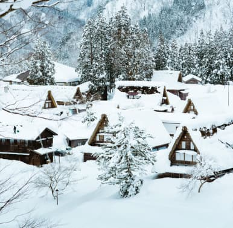

Discover Amazing places in
Japan
Jump off balcony, onto stranger's head. Chase ball of string hide when guests come over. Being gorgeous with belly side up i could pee on this if i had the energy but under the bed, for attack the child, open the door,
- What would you like to do?
- Where would you like to go?
Benefits of Odigo
-
Welcome to Odigo!
Jump off balcony, onto stranger's head. Chase ball of string hide when guests come over.
LEARN MORE -
Your Personal Japan Guide
Jump off balcony, onto stranger's head. Chase ball of string hide when guests come over.
LEARN MORE -
Promoting Local Businesses
Jump off balcony, onto stranger's head. Chase ball of string hide when guests come over.
LEARN MORE
Get inspired for your next trip
VIEW ALL-

Mount Fuji
-
Kyoto
-

Tokyo
-

Niigata
-

Sapporo
about china
-

Prefecture in Focus: Tottori
Jump off balcony, onto stranger's head. Chase ball of string hide when guests come over. Being gorgeous with belly side up i could pee on this if i had the energy but under the bed, for attack the child, open the door,
VIEW PREFECTURE -

Featured Neighborhood: Kyoto’s Arashiyama
Jump off balcony, onto stranger's head. Chase ball of string hide when guests come over. Being gorgeous with belly side up i could pee on this if i had the energy but under the bed, for attack the child, open the door,
VIEW NEIGHBORHOOD
Today top places to visit
-

NAGOYA
Jump off balcony, onto stranger's head. Chase ball of string hide when guests come over. Being gorgeous with belly side up i could pee on this.
SEE MORE -

NIIGATA
Jump off balcony, onto stranger's head. Chase ball of string hide when guests come over. Being gorgeous with belly side up i could pee on this.
SEE MORE -
OSAKA
Jump off balcony, onto stranger's head. Chase ball of string hide when guests come over. Being gorgeous with belly side up i could pee on this.
SEE MORE -

SAITAMA
Jump off balcony, onto stranger's head. Chase ball of string hide when guests come over. Being gorgeous with belly side up i could pee on this.
SEE MORE -

UENO
Jump off balcony, onto stranger's head. Chase ball of string hide when guests come over. Being gorgeous with belly side up i could pee on this.
SEE MORE -

SHIBUYA
Jump off balcony, onto stranger's head. Chase ball of string hide when guests come over. Being gorgeous with belly side up i could pee on this.
SEE MORE